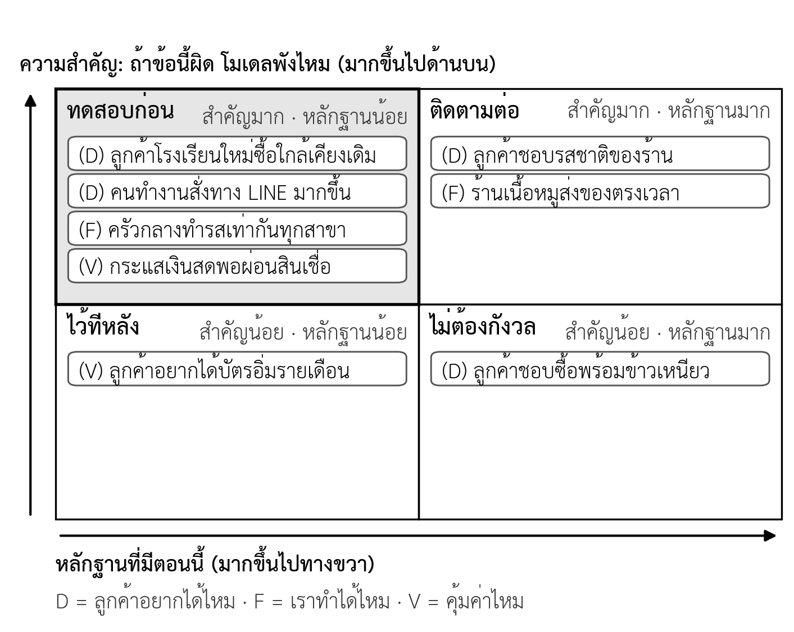

บทที่ 3 เข้าใจลูกค้า: คุณค่าที่เสนอและหลักฐานจากลูกค้า
เมื่อศึกษาบทนี้จบแล้ว นิสิตสามารถ
- อธิบายแนวคิดงานที่ลูกค้าต้องการให้สำเร็จ และเขียนกลุ่มลูกค้าในรูปของงาน บริบท และปัญหาได้
- จัดทำส่วนข้อมูลลูกค้าและส่วนแผนคุณค่าของ Value Proposition Canvas และจับคู่รายการของสองส่วนได้
- จำแนกระดับความแข็งของหลักฐาน และระบุว่าข้อความใดเป็นข้อเท็จจริงหรือข้อสมมติได้
- ประยุกต์ใช้หลักการสัมภาษณ์ เขียนคำถามสัมภาษณ์ลูกค้าที่ไม่ชี้นำ และสัมภาษณ์โดยเคารพสิทธิของผู้ให้ข้อมูลได้
- ใช้แผนที่ข้อสมมติจัดกลุ่มข้อสมมติ และจัดทำบัตรทดสอบพร้อมเกณฑ์ผ่านได้
- จับคู่วิธีทดสอบกับข้อสมมติแต่ละแบบตามตารางที่ 3.8 และบันทึกผลด้วยบัตรบันทึกผลการเรียนรู้ได้
- ระบุข้อสมมติที่ต้องพิสูจน์ในแต่ละระยะของเส้นทางสู่เป้าหมายได้
- สรุปผลการสัมภาษณ์ลูกค้าอย่างน้อยห้ารายและปรับ Canvas ของกลุ่มได้ (ใบงานที่ 3)
ความนำ
Canvas ฉบับแรกจากบทที่ 2 ส่วนใหญ่ยังเป็นข้อสมมติ และข้อสมมติที่สำคัญที่สุดมักอยู่ในสองช่อง คือกลุ่มลูกค้าและคุณค่าที่เสนอ ถ้าลูกค้าไม่มีปัญหาที่เราคิด หรือมีแต่ไม่เจ็บพอที่จะจ่ายเงินแก้ ช่องอื่นทั้งหมดก็ไม่มีความหมาย บทนี้จึงเป็นขั้นตอนที่สามของกระบวนการจัดทำแผน คือการออกไปเก็บข้อมูลจากลูกค้าจริงเพื่อเปลี่ยนข้อสมมติให้เป็นข้อเท็จจริง
บทนี้เริ่มจากมุมมองว่าลูกค้าซื้อสิ่งที่ช่วยให้งานของเขาสำเร็จ ไม่ได้ซื้อตัวสินค้า แล้วใช้ Value Proposition Canvas ซูมเข้าไปในสองช่องหลักของ BMC จากนั้นจึงพิจารณาว่าหลักฐานแบบใดแข็งพอ วิธีสัมภาษณ์ลูกค้าโดยไม่ได้คำตอบเอาใจ และวิธีเลือกข้อสมมติที่ต้องทดสอบก่อน ท้ายบทนิสิตจะสัมภาษณ์ลูกค้าอย่างน้อยห้าราย และปรับ Canvas ตามสิ่งที่พบ
3.1 ลูกค้าซื้อสิ่งที่ช่วยให้งานสำเร็จ
Christensen และคณะ (2016) เสนอว่าลูกค้าไม่ได้ซื้อสินค้าหรือบริการเพียงเพราะคุณสมบัติของมัน แต่ "จ้าง" สินค้านั้นมาทำงานที่ต้องการให้สำเร็จ (job to be done) ในสถานการณ์หนึ่ง เมื่อเข้าใจงานนั้น ผู้ประกอบการจะเห็นว่าคู่แข่งที่แท้จริงคือทุกทางเลือกที่ลูกค้าใช้ทำงานเดียวกัน ไม่ใช่เฉพาะสินค้าประเภทเดียวกัน เช่น งาน "กินมื้อเช้าให้อิ่มระหว่างทางไปโรงเรียน" อาจทำได้ด้วยหมูปิ้ง ขนมปังจากร้านสะดวกซื้อ หรือนมกล่อง ทั้งหมดนี้จึงเป็นคู่แข่งกัน
มุมมองนี้ช่วยแก้ข้อผิดพลาดที่พบบ่อยที่สุดในบทที่ 1 คือการเริ่มจากสินค้าแทนลูกค้า และช่วยให้เขียนกลุ่มลูกค้าได้เฉพาะเจาะจง กลุ่มลูกค้าที่ดีควรระบุสามส่วน คือ งานที่ลูกค้าพยายามทำ บริบทหรือสถานการณ์ และปัญหาที่เจอ เช่น "คนทำงานที่ต้องซื้ออาหารเช้าให้ทั้งสำนักงานก่อนเข้างาน และเสียเวลาต่อคิวรับทีละห่อ"
3.2 Value Proposition Canvas
Value Proposition Canvas (VPC) เป็นเครื่องมือที่ซูมเข้าไปในสองช่องหลักของ BMC คือกลุ่มลูกค้าและคุณค่าที่เสนอ (Osterwalder et al., 2014) VPC มีสองส่วน ส่วนแรกคือส่วนข้อมูลลูกค้า (customer profile) ซึ่งอธิบายลูกค้ากลุ่มหนึ่ง ส่วนที่สองคือส่วนแผนคุณค่า (value map) ซึ่งอธิบายว่าเราจะสร้างคุณค่าให้ลูกค้ากลุ่มนั้นอย่างไร ลูกค้าแต่ละกลุ่มใช้ VPC แยกกันหนึ่งชุด
3.2.1 ส่วนข้อมูลลูกค้า
ส่วนข้อมูลลูกค้ามีสามองค์ประกอบ งานของลูกค้า (customer jobs) คือสิ่งที่ลูกค้าพยายามทำให้สำเร็จ ทั้งงานด้านการใช้งาน งานด้านสังคม เช่น ต้องการดูดีในสายตาผู้อื่น งานด้านอารมณ์ เช่น ต้องการความสบายใจ และงานสนับสนุน เช่น การเปรียบเทียบเลือกซื้อ ความเจ็บปวด (pains) คือสิ่งที่รบกวนลูกค้าก่อน ระหว่าง หรือหลังทำงาน ได้แก่ ผลลัพธ์ที่ไม่ต้องการ อุปสรรค และความเสี่ยง ส่วนผลที่อยากได้ (gains) คือผลลัพธ์และประโยชน์ที่ลูกค้าต้องการ ตั้งแต่สิ่งที่ขาดไม่ได้ สิ่งที่คาดหวัง สิ่งที่ปรารถนา ไปจนถึงสิ่งที่เกินคาด (Osterwalder et al., 2014)
เมื่อเขียนแล้วต้องจัดลำดับ งานใดสำคัญที่สุดสำหรับลูกค้า ความเจ็บปวดใดรุนแรงที่สุด และผลใดที่ลูกค้าอยากได้มากที่สุด เพราะธุรกิจไม่สามารถตอบทุกข้อได้ การจัดลำดับที่ถูกต้องต้องมาจากลูกค้า ไม่ใช่จากความเห็นของทีม ซึ่งเป็นเหตุผลของการสัมภาษณ์ในหัวข้อ 3.4
3.2.2 ส่วนแผนคุณค่าและความพอดี
ส่วนแผนคุณค่าจับคู่กับส่วนข้อมูลลูกค้าทีละองค์ประกอบ (ตารางที่ 3.1) หลักสำคัญคือเขียนส่วนข้อมูลลูกค้าให้เสร็จก่อน แล้วจึงออกแบบส่วนแผนคุณค่า เพื่อไม่ให้นำสินค้าที่ทีมมีอยู่แล้วมาตั้งโจทย์แทนลูกค้า
ตารางที่ 3.1 องค์ประกอบของ Value Proposition Canvas ที่จับคู่กัน
| ส่วนข้อมูลลูกค้า | ความหมาย | ส่วนแผนคุณค่าที่จับคู่ | ความหมาย |
|---|---|---|---|
| งานของลูกค้า (customer jobs) | สิ่งที่ลูกค้าพยายามทำให้สำเร็จ | สินค้าและบริการ (products and services) | สิ่งที่เราเสนอ ซึ่งคุณค่าทั้งหมดสร้างบนสิ่งนี้ |
| ความเจ็บปวด (pains) | สิ่งที่รบกวนลูกค้าก่อน ระหว่าง หรือหลังทำงาน | ตัวลดความเจ็บปวด (pain relievers) | วิธีที่สินค้าลดหรือกำจัดความเจ็บปวดข้อนั้น |
| ผลที่อยากได้ (gains) | ผลลัพธ์และประโยชน์ที่ลูกค้าต้องการ | ตัวสร้างผลที่อยากได้ (gain creators) | วิธีที่สินค้าสร้างผลที่ลูกค้าอยากได้ข้อนั้น |
ที่มา: เรียบเรียงจาก Osterwalder และคณะ (2014)
ตารางที่ 3.2 แสดงตัวอย่าง VPC ของลูกค้ากลุ่มคนทำงานของหมูปิ้งอาจารย์ตั้ม สังเกตว่าแต่ละรายการในส่วนแผนคุณค่าชี้ไปที่รายการในส่วนข้อมูลลูกค้าอย่างชัดเจน และความเจ็บปวดเรื่องความสะอาดยังไม่มีตัวลดความเจ็บปวดที่ร้านพิสูจน์ได้ ซึ่งเป็นช่องว่างที่ต้องคิดต่อ
ตารางที่ 3.2 ตัวอย่าง VPC ของลูกค้ากลุ่มคนทำงาน หมูปิ้งอาจารย์ตั้ม (กรณีศึกษาสมมติ)
| ส่วนข้อมูลลูกค้า | รายการ (เรียงตามความสำคัญ) | ส่วนแผนคุณค่า | รายการที่ตอบ |
|---|---|---|---|
| งานของลูกค้า | ซื้ออาหารเช้าให้ทุกคนในสำนักงานก่อนเข้างาน (การใช้งาน) · ให้ทีมเห็นว่าดูแลเพื่อนร่วมงาน (สังคม) | สินค้าและบริการ | ชุดหมูปิ้งข้าวเหนียว · รับออเดอร์กลุ่มทาง LINE |
| ความเจ็บปวด | 1. ต่อคิวนาน 2. จำรายการของแต่ละคนผิด 3. ไม่แน่ใจความสะอาด | ตัวลดความเจ็บปวด | สั่งล่วงหน้า รับได้ทันที (ตอบข้อ 1) · ส่งรายการทาง LINE เป็นข้อความ (ตอบข้อ 2) · ข้อ 3 ยังไม่มี |
| ผลที่อยากได้ | 1. สั่งครั้งเดียวได้ครบ 2. ราคาคุ้มเมื่อซื้อจำนวนมาก | ตัวสร้างผลที่อยากได้ | แพ็กแยกห่อพร้อมชื่อ (ตอบข้อ 1) · ราคาตามปริมาณ (ตอบข้อ 2) |
ความพอดี (fit) เกิดเมื่อตัวลดความเจ็บปวดและตัวสร้างผลที่อยากได้ตอบความเจ็บปวดและผลที่อยากได้ที่สำคัญของลูกค้า Osterwalder และคณะ (2014) แบ่งความพอดีเป็นสามระดับ ระดับแรกคือความพอดีระหว่างปัญหากับทางแก้ (problem–solution fit) ซึ่งยังอยู่บนกระดาษ ระดับที่สองคือความพอดีระหว่างสินค้ากับตลาด (product–market fit) ซึ่งมีหลักฐานว่าลูกค้าต้องการจริง และระดับที่สามคือความพอดีของโมเดลธุรกิจ (business model fit) ซึ่งมีหลักฐานว่าธุรกิจทำกำไรได้ ในสัปดาห์นี้นิสิตมุ่งที่ระดับแรก และเริ่มเก็บหลักฐานสำหรับระดับที่สอง
3.3 ข้อเท็จจริงกับข้อสมมติ: หลักฐานแข็งแค่ไหน
เกณฑ์ที่ใช้แยกข้อเท็จจริงกับข้อสมมติคือหลักฐาน ไม่ใช่ความมั่นใจของทีม ถ้าถามว่า "รู้ได้อย่างไร" แล้วชี้หลักฐานจากโลกจริงได้ ข้อความนั้นเป็นข้อเท็จจริง ถ้าตอบได้เพียง "คิดว่า" ข้อความนั้นยังเป็นข้อสมมติ ไม่ว่าทีมจะมั่นใจเพียงใด Canvas ของธุรกิจใหม่ที่ส่วนใหญ่เป็นข้อสมมติเป็นเรื่องปกติ สิ่งที่อันตรายคือการติดป้ายข้อเท็จจริงให้สิ่งที่ยังไม่ได้ทดสอบ
หลักฐานแต่ละแบบแข็งไม่เท่ากัน หลักทั่วไปคือ สิ่งที่ลูกค้าทำแข็งกว่าสิ่งที่ลูกค้าพูด และยิ่งลูกค้าลงทุนมาก ทั้งเวลา เงิน หรือข้อมูลส่วนตัว หลักฐานยิ่งแข็ง (Bland & Osterwalder, 2019) ตารางที่ 3.3 จัดลำดับหลักฐานเป็นสามขั้น
ตารางที่ 3.3 ความแข็งของหลักฐานจากลูกค้า
| ระดับ | ลักษณะ | ตัวอย่าง |
|---|---|---|
| อ่อน: ความเห็น | ลูกค้าพูดถึงความรู้สึก | "ชอบนะ" "น่าสนใจ" "อร่อยดี" |
| ปานกลาง: ความตั้งใจ | ลูกค้าบอกว่าจะทำในอนาคต | "ถ้ามีจะซื้อ" ตอบแบบสอบถามว่าสนใจ |
| แข็ง: การกระทำ | ลูกค้าลงทุนจริง | จ่ายเงิน วางมัดจำ สั่งล่วงหน้า กลับมาซื้อซ้ำ |
นิสิตควรระวังกับดักสามข้อ ข้อแรก สิ่งที่ธุรกิจสัญญาไม่เท่ากับสิ่งที่ลูกค้ารับรู้ "ร้านประกาศว่าอร่อย" เป็นข้อเท็จจริงว่าร้านประกาศ แต่ "ลูกค้ารู้สึกว่าอร่อย" ยังต้องพิสูจน์ ข้อที่สอง ความเห็นของเพื่อนและครอบครัวเป็นหลักฐานที่อ่อนที่สุด เพราะมักพูดเพื่อให้กำลังใจ ข้อที่สาม ข้อเท็จจริงหมดอายุได้ สิ่งที่เคยจริงอาจเปลี่ยนเมื่อสภาพแวดล้อมเปลี่ยน จึงต้องทบทวนเป็นระยะ
3.4 การสัมภาษณ์ลูกค้า
การสัมภาษณ์ลูกค้าในระยะนี้มีเป้าหมายเพื่อเรียนรู้ ไม่ใช่เพื่อขาย ปัญหาที่พบบ่อยคือผู้สัมภาษณ์เล่าแนวคิดของตนแล้วถามว่าลูกค้าชอบหรือไม่ ซึ่งได้แต่คำชมที่ไม่มีความหมาย Fitzpatrick (2013) เสนอหลักสามข้อเพื่อหลีกเลี่ยงปัญหานี้ คือ ให้ถามเรื่องชีวิตและงานของลูกค้า ไม่ใช่เรื่องแนวคิดของเรา ให้ถามถึงเหตุการณ์ที่เกิดขึ้นจริงในอดีต ไม่ใช่ความเห็นหรือการคาดการณ์อนาคต และให้พูดน้อยฟังมาก
ตารางที่ 3.4 ตัวอย่างคำถามที่ควรหลีกเลี่ยงและคำถามที่ควรใช้
| คำถามที่ควรหลีกเลี่ยง | ปัญหา | คำถามที่ควรใช้แทน |
|---|---|---|
| ถ้ามีบริการสั่งหมูปิ้งล่วงหน้า คุณจะใช้ไหม | ถามอนาคต ได้คำตอบเอาใจ | ครั้งล่าสุดที่ซื้ออาหารเช้าให้ทั้งสำนักงาน ทำอย่างไร |
| คุณคิดว่าแนวคิดนี้ดีไหม | ถามความเห็นต่อแนวคิดของเรา | เรื่องอาหารเช้า อะไรที่ทำให้คุณหงุดหงิดที่สุดในสัปดาห์นี้ |
| คุณยอมจ่ายเท่าไร | ตัวเลขสมมติ ไม่ผูกพัน | ตอนนี้จ่ายค่าอาหารเช้าวันละเท่าไร ซื้อจากที่ไหน |
| คุณไม่ชอบต่อคิวใช่ไหม | ชี้นำคำตอบ | ช่วยเล่าขั้นตอนตั้งแต่ออกจากบ้านจนได้อาหารเช้า |
ในรายวิชานี้ แต่ละกลุ่มสัมภาษณ์ลูกค้าอย่างน้อยห้ารายต่อกลุ่มลูกค้าหลัก ผู้ให้สัมภาษณ์ต้องเป็นลูกค้าเป้าหมายจริง ไม่ใช่เพื่อนที่ไม่ได้อยู่ในกลุ่มนั้น ควรมีผู้สัมภาษณ์หนึ่งคนและผู้จดบันทึกหนึ่งคน บันทึกคำพูดของลูกค้าตามจริงแยกจากการตีความของทีม และปิดการสัมภาษณ์ด้วยการขอสิ่งที่ผูกพันเล็กน้อย เช่น ขอช่องทางติดต่อเพื่อแจ้งเมื่อเปิดขาย ซึ่งเป็นหลักฐานที่แข็งกว่าคำพูด
การสัมภาษณ์หนึ่งครั้งใช้เวลาประมาณ 15–20 นาที และควรมีลำดับขั้นตามตารางที่ 3.5 ขั้นที่สำคัญที่สุดคือขั้นที่ 3 และ 4 ซึ่งถามถึงเหตุการณ์จริงครั้งล่าสุด ผู้สัมภาษณ์ควรถามต่อด้วย "ทำไม" และ "แล้วเกิดอะไรขึ้นต่อ" แทนการเปลี่ยนไปคำถามถัดไปทันที ส่วนการแนะนำแนวคิดของกลุ่ม ถ้าจำเป็น ให้ทำหลังสุดเท่านั้น เพื่อไม่ให้ชี้นำคำตอบก่อนหน้า
ตารางที่ 3.5 ลำดับขั้นของการสัมภาษณ์ลูกค้า
| ขั้น | จุดประสงค์ | ตัวอย่างคำถามหรือการกระทำ |
|---|---|---|
| 1. เปิด | แนะนำตัว แจ้งวัตถุประสงค์ ขอความยินยอม | "เรากำลังเรียนรู้เรื่องการซื้ออาหารเช้า ไม่ได้มาขายของ ขออนุญาตจดบันทึกได้ไหม" |
| 2. บริบท | เข้าใจชีวิตและงานของลูกค้า | "ปกติวันทำงานเริ่มกี่โมง ใครเป็นคนซื้ออาหารเช้าให้ทีม" |
| 3. เหตุการณ์ล่าสุด | ได้ข้อมูลพฤติกรรมจริง | "ครั้งล่าสุดที่ซื้อให้ทีม ช่วยเล่าตั้งแต่ต้นจนจบ" |
| 4. ความเจ็บปวดและทางแก้ปัจจุบัน | หาปัญหาที่ลูกค้าพูดถึงเอง และคู่แข่งทางอ้อม | "ขั้นไหนยุ่งยากที่สุด ตอนนี้แก้ปัญหานั้นอย่างไร เสียเงินหรือเวลาเท่าไร" |
| 5. ปิด | ขอสิ่งที่ผูกพันเล็กน้อย และขอบคุณ | "ถ้าเปิดรับออเดอร์ล่วงหน้า ขอแจ้งทาง LINE ได้ไหม" "มีใครอีกที่ควรคุยด้วย" |
การสัมภาษณ์ต้องเคารพสิทธิของผู้ให้ข้อมูล ผู้สัมภาษณ์ควรแนะนำตัวและแจ้งวัตถุประสงค์ ขอความยินยอมก่อนบันทึกเสียงหรือภาพ ไม่เก็บข้อมูลเกินที่จำเป็น และไม่ระบุชื่อผู้ให้ข้อมูลในรายงาน เพราะข้อมูลที่ระบุตัวบุคคลได้เป็นข้อมูลส่วนบุคคลตามพระราชบัญญัติคุ้มครองข้อมูลส่วนบุคคล พ.ศ. 2562 ในรายงานจึงควรใช้รหัส เช่น ผู้ให้ข้อมูลรายที่ 1 แทนชื่อ
การสัมภาษณ์บอกว่าลูกค้ามีปัญหาอะไรและทำไม แต่ไม่บอกว่าปัญหานั้นพบบ่อยเพียงใด เมื่อรู้แล้วว่าควรถามอะไร นิสิตจึงใช้แบบสอบถาม (questionnaire) ถามคนจำนวนมากขึ้นเพื่อวัดความถี่ ลำดับที่ถูกคือสัมภาษณ์ก่อนแล้วจึงทำแบบสอบถาม เพราะถ้าทำแบบสอบถามก่อน ทีมจะตั้งตัวเลือกคำตอบจากความคิดของตนเอง และอาจไม่มีตัวเลือกที่ตรงกับปัญหาจริงของลูกค้าเลย ตารางที่ 3.6 สรุปข้อผิดพลาดที่พบบ่อยในแบบสอบถามของนิสิต
ตารางที่ 3.6 ข้อผิดพลาดที่พบบ่อยในแบบสอบถามและวิธีแก้
| ข้อผิดพลาด | ตัวอย่าง | วิธีแก้ |
|---|---|---|
| ถามสองเรื่องในข้อเดียว | ร้านนี้สะอาดและราคาถูกใช่หรือไม่ | แยกเป็นสองข้อ |
| คำถามชี้นำ | คุณเห็นด้วยไหมว่าการต่อคิวเสียเวลามาก | ถามพฤติกรรม เช่น สัปดาห์นี้ต่อคิวซื้ออาหารเช้ากี่วัน |
| ถามความตั้งใจในอนาคต | ถ้ามีบริการนี้ คุณจะใช้ไหม | ถามสิ่งที่ทำอยู่จริงและค่าใช้จ่ายจริง |
| ตัวเลือกไม่ครอบคลุม | ซื้ออาหารเช้าจาก ร้านหมูปิ้ง หรือ ร้านสะดวกซื้อ | เพิ่มตัวเลือก "อื่น ๆ โปรดระบุ" และ "ไม่ได้ซื้อ" |
| ผู้ตอบไม่ใช่ลูกค้าเป้าหมาย | ส่งลิงก์ในกลุ่มเพื่อนร่วมชั้น | มีคำถามคัดกรองข้อแรก และส่งให้กลุ่มเป้าหมายจริง |
| สรุปเกินกว่าข้อมูล | ผู้ตอบ 30 คนชอบ จึงสรุปว่าคนทั้งจังหวัดชอบ | รายงานจำนวนผู้ตอบ และสรุปเฉพาะกลุ่มที่ตอบ |
อีกวิธีที่ได้หลักฐานจากพฤติกรรมจริงโดยไม่ต้องถามใครคือการสังเกต (observation) เช่น การนับจำนวนลูกค้าที่ผ่านหน้าร้านและจำนวนที่ซื้อ ในช่วงเวลาเดียวกันหลายวัน การสังเกตให้ตัวเลขที่ใช้เป็นตัวคูณในการประมาณขนาดตลาดในบทที่ 4 ได้โดยตรง ตารางที่ 3.7 เป็นตัวอย่างแบบบันทึกการนับของกรณีศึกษา ซึ่งนับที่โรงเรียนของสาขาเดิม
ตารางที่ 3.7 ตัวอย่างแบบบันทึกการนับนักเรียนหน้าโรงเรียนของสาขาเดิม เวลา 06.30–07.30 น. (กรณีศึกษาสมมติ)
| วัน | นักเรียนที่เดินผ่านประตู | ซื้ออาหารเช้าจากร้านรอบโรงเรียน | ร้อยละ |
|---|---|---|---|
| จันทร์ | 1,320 | 545 | 41.3 |
| อังคาร | 1,355 | 528 | 39.0 |
| พุธ | 1,340 | 551 | 41.1 |
| พฤหัสบดี | 1,310 | 509 | 38.9 |
| ศุกร์ | 1,290 | 538 | 41.7 |
| รวมห้าวัน | 6,615 | 2,671 | 40.4 |
ผลการนับนี้เป็นข้อเท็จจริงของโรงเรียนสาขาเดิม และสนับสนุนตัวเลขร้อยละ 40 ที่ใช้ในบทที่ 4 แต่ยังไม่ใช่หลักฐานของโรงเรียนแห่งใหม่ เพราะพฤติกรรมของนักเรียนแต่ละโรงเรียนอาจต่างกัน เช่น โรงเรียนที่มีโรงอาหารเปิดเช้าอาจมีสัดส่วนต่ำกว่า หลักฐานจากที่หนึ่งจึงใช้กับอีกที่หนึ่งได้เพียงเป็นข้อสมมติที่มีเหตุผล ซึ่งต้องนับซ้ำที่โรงเรียนแห่งใหม่ก่อนยื่นแผน
3.5 เลือกข้อสมมติที่ต้องทดสอบก่อน
ธุรกิจมีข้อสมมติมากกว่าที่จะทดสอบได้ทั้งหมด Bland และ Osterwalder (2019) เสนอให้วางข้อสมมติบนแผนที่สองแกน คือ ความสำคัญ (ถ้าข้อนี้ผิด โมเดลธุรกิจพังหรือไม่) และหลักฐาน (ตอนนี้มีหลักฐานมากหรือน้อย) แล้วทดสอบข้อที่สำคัญมากแต่มีหลักฐานน้อยก่อน (ภาพที่ 3.1) ข้อสมมติยังแบ่งตามความเสี่ยงได้สามแบบ ได้แก่ ลูกค้าอยากได้หรือไม่ (desirability) ซึ่งมักอยู่ในช่องกลุ่มลูกค้า คุณค่า ช่องทาง และความสัมพันธ์ เราทำได้หรือไม่ (feasibility) ซึ่งมักอยู่ในช่องทรัพยากร กิจกรรม และพันธมิตร และคุ้มค่าหรือไม่ (viability) ซึ่งมักอยู่ในช่องรายได้และต้นทุน

ที่มา: แนวคิดแผนที่ข้อสมมติจาก Bland และ Osterwalder (2019) ชื่อช่องและรายการเรียบเรียงโดยผู้สอน
เมื่อเลือกข้อสมมติได้แล้ว ให้เขียนบัตรทดสอบ (test card) ซึ่งระบุสี่อย่าง คือ ข้อสมมติที่จะทดสอบ วิธีทดสอบ สิ่งที่จะวัด และเกณฑ์ผ่าน (Bland & Osterwalder, 2019) เกณฑ์ผ่านต้องตั้งไว้ก่อนทดสอบเสมอ ถ้าตั้งหลังเห็นผล ทีมมักตีความให้ผ่านทุกครั้ง ควรเริ่มจากการทดสอบที่ถูกและเร็วก่อน เมื่อมั่นใจขึ้นจึงลงทุนกับการทดสอบที่ให้หลักฐานแข็งขึ้น
การสัมภาษณ์เป็นเพียงวิธีทดสอบแบบหนึ่ง Bland และ Osterwalder (2019) รวบรวมวิธีทดสอบไว้จำนวนมาก ตั้งแต่วิธีที่ถูกและเร็วแต่ได้หลักฐานอ่อน ไปจนถึงวิธีที่ใช้เวลาและเงินมากกว่าแต่ได้หลักฐานแข็ง ตารางที่ 3.8 แสดงวิธีที่นิสิตใช้ได้ในรายวิชา เรียงจากหลักฐานอ่อนไปแข็ง หลักการเลือกคือใช้วิธีที่ถูกที่สุดที่ยังให้หลักฐานแข็งพอสำหรับการตัดสินใจนั้น ถ้าการตัดสินใจลงทุนน้อย หลักฐานระดับปานกลางอาจพอ แต่ถ้าการตัดสินใจคือการกู้เงินหลายแสนบาท ควรมีหลักฐานจากการกระทำของลูกค้า
ตารางที่ 3.8 วิธีทดสอบข้อสมมติที่ใช้ได้ในรายวิชา
| วิธีทดสอบ | ลักษณะ | ความแข็งของหลักฐาน | เหมาะกับข้อสมมติแบบ |
|---|---|---|---|
| สัมภาษณ์ลูกค้า | คุยเรื่องเหตุการณ์จริงในอดีต | อ่อนถึงปานกลาง | ลูกค้ามีปัญหานี้จริงหรือไม่ (D) |
| แบบสอบถาม | ถามคนจำนวนมากด้วยคำถามชุดเดียว | ปานกลาง | ปัญหานี้พบบ่อยแค่ไหน (D) |
| หน้าเว็บทดสอบ (simple landing page) | หน้าเว็บอธิบายสินค้า มีปุ่มให้ลงทะเบียน | ปานกลาง | ลูกค้าสนใจพอจะให้ข้อมูลติดต่อหรือไม่ (D) |
| การขายจำลอง (mock sale) | เสนอขายจริงพร้อมราคา แต่ยังไม่เก็บเงิน | ปานกลางถึงแข็ง | ลูกค้ายอมรับราคาหรือไม่ (D, V) |
| การขายล่วงหน้า (pre-sale) | รับเงินหรือมัดจำก่อนสินค้าพร้อม | แข็ง | ลูกค้ายอมจ่ายจริงหรือไม่ (D, V) |
| บริการด้วยมือ (concierge) | ให้บริการด้วยคนทีละราย ลูกค้ารู้ว่าเป็นงานมือ | แข็ง | คุณค่าที่ส่งมอบตรงความต้องการหรือไม่ (D, F) |
| บริการที่ดูเป็นระบบ (Wizard of Oz) | ลูกค้าเห็นเป็นระบบอัตโนมัติ แต่คนทำงานอยู่เบื้องหลัง | แข็ง | ลูกค้าใช้บริการแบบนี้จริงหรือไม่ ก่อนลงทุนสร้างระบบ (D, F) |
| ต้นแบบขั้นต่ำ (minimum viable product: MVP) | สินค้ารุ่นแรกที่เล็กที่สุดที่ใช้เรียนรู้จากลูกค้าจริงได้ | แข็ง | ทั้งโมเดลทำงานได้หรือไม่ (D, F, V) |
ที่มา: เรียบเรียงจาก Bland และ Osterwalder (2019) และ Ries (2011)
เมื่อทดสอบเสร็จ ให้บันทึกผลในบัตรบันทึกผลการเรียนรู้ (learning card) ซึ่งคู่กับบัตรทดสอบ (Bland & Osterwalder, 2019) บัตรนี้บันทึกสี่อย่าง คือ เราเชื่อว่าอะไร เราสังเกตเห็นอะไร เราเรียนรู้อะไร และเราจะทำอะไรต่อ ส่วนสุดท้ายสำคัญที่สุด เพราะการทดสอบที่ไม่นำไปสู่การตัดสินใจเป็นการเสียเวลา ตารางที่ 3.9 แสดงบัตรทั้งสองของกรณีศึกษาคู่กัน
ตารางที่ 3.9 บัตรทดสอบและบัตรบันทึกผลการเรียนรู้ของหมูปิ้งอาจารย์ตั้ม (กรณีศึกษาสมมติ)
| บัตร | หัวข้อ | เนื้อหา |
|---|---|---|
| บัตรทดสอบ | ข้อสมมติ | คนทำงานจะสั่งอาหารเช้าล่วงหน้าทาง LINE เป็นประจำ |
| บัตรทดสอบ | วิธีทดสอบ | เปิดรับออเดอร์ทาง LINE จริงสองสัปดาห์ แจกบัตรเชิญที่สำนักงานรอบโรงเรียน |
| บัตรทดสอบ | สิ่งที่วัด | จำนวนสำนักงานที่สั่งซ้ำอย่างน้อยสองครั้ง |
| บัตรทดสอบ | เกณฑ์ผ่าน (ตั้งก่อนทดสอบ) | อย่างน้อยห้าสำนักงาน |
| บัตรบันทึกผล | เราเชื่อว่า | คนทำงานอยากสั่งล่วงหน้าเพื่อเลี่ยงการต่อคิว |
| บัตรบันทึกผล | เราสังเกตเห็น | ผลการทดสอบจริงจะบันทึกเมื่อทดสอบเสร็จ (ช่องนี้เว้นไว้ในแผน) |
| บัตรบันทึกผล | เราเรียนรู้ | สรุปจากผลที่สังเกตเทียบกับเกณฑ์ผ่าน |
| บัตรบันทึกผล | เราจะทำต่อ | ถ้าผ่าน ใส่ช่องทาง LINE ในแผนการตลาด ถ้าไม่ผ่าน ทบทวนคุณค่า "ซื้อง่าย ได้เร็ว" |
3.6 จากข้อมูลลูกค้าสู่แผนธุรกิจ
หลังสัมภาษณ์ครบ ให้รวบรวมคำตอบลงตาราง แถวละหนึ่งผู้ให้ข้อมูล คอลัมน์ละหนึ่งประเด็น เช่น งาน ความเจ็บปวด ผลที่อยากได้ และวิธีแก้ปัญหาในปัจจุบัน แล้วมองหารูปแบบที่ซ้ำกัน ความเจ็บปวดที่ผู้ให้ข้อมูลอย่างน้อยสามในห้ารายพูดถึงเองโดยไม่ถูกชี้นำ เป็นหลักฐานที่ดีกว่าความเจ็บปวดที่พบเพียงรายเดียว ข้อสรุปนี้เป็นเกณฑ์ช่วยตัดสินของรายวิชา ไม่ใช่เกณฑ์ทางสถิติ เพราะห้ารายยังเป็นตัวอย่างขนาดเล็ก ตารางที่ 3.10 แสดงตัวอย่างการสรุปผลของกรณีศึกษา
ตารางที่ 3.10 ตัวอย่างตารางสรุปผลการสัมภาษณ์ลูกค้ากลุ่มคนทำงาน (กรณีศึกษาสมมติ)
| ผู้ให้ข้อมูล | ซื้อให้กี่คน | วิธีปัจจุบัน | ความเจ็บปวดที่พูดถึงเอง | ผลที่อยากได้ |
|---|---|---|---|---|
| รายที่ 1 | 8 | ต่อคิวร้านข้าวมันไก่ | ต่อคิวนาน · จำรายการผิด | สั่งครั้งเดียวได้ครบ |
| รายที่ 2 | 5 | ร้านสะดวกซื้อ | ต่อคิวนาน | ราคาคุ้ม |
| รายที่ 3 | 12 | ต่อคิวหมูปิ้งร้านอื่น | ต่อคิวนาน · จำรายการผิด · ไม่แน่ใจความสะอาด | สั่งครั้งเดียวได้ครบ |
| รายที่ 4 | 6 | ให้แต่ละคนซื้อเอง | จำรายการผิด | สั่งครั้งเดียวได้ครบ |
| รายที่ 5 | 10 | ต่อคิวหมูปิ้งร้านอื่น | ต่อคิวนาน · จำรายการผิด | ราคาคุ้ม |
| รายที่ 6 | 4 | ร้านสะดวกซื้อ | ต่อคิวนาน · ไม่แน่ใจความสะอาด | สั่งครั้งเดียวได้ครบ |
| รูปแบบที่พบ | ต่อคิวนาน 5/6 · จำรายการผิด 4/6 · สะอาด 2/6 | สั่งครั้งเดียว 4/6 · ราคาคุ้ม 2/6 |
ตารางนี้แสดงว่าความเจ็บปวดเรื่องต่อคิวและจำรายการผิดพบซ้ำเกินเกณฑ์สามในห้า ส่วนเรื่องความสะอาดพบเพียงสองราย จึงยังเป็นข้อสมมติ คอลัมน์วิธีปัจจุบันยังให้รายชื่อคู่แข่งทางอ้อม คือร้านข้าวมันไก่ ร้านสะดวกซื้อ และการให้แต่ละคนซื้อเอง
ผลการสัมภาษณ์นำไปใช้สามทาง ทางแรก ปรับ Canvas เปลี่ยนป้ายข้อสมมติที่ได้หลักฐานแล้วเป็นข้อเท็จจริง และแก้รายการที่ผิด ทางที่สอง เขียนส่วนข้อมูลลูกค้าในแผนธุรกิจส่วนที่ 3 พร้อมอ้างอิงจำนวนผู้ให้ข้อมูลและคำพูดสำคัญ ทางที่สาม นำวิธีแก้ปัญหาในปัจจุบันของลูกค้าไปใช้เป็นรายชื่อคู่แข่งทางอ้อมในบทที่ 5 ส่วนตารางสรุปผลและใบยินยอม (ตัวอย่างอยู่ท้ายหัวข้อ 3.7) เก็บไว้ในภาคผนวกของเล่มแผนธุรกิจ
ตารางที่ 3.11 แสดงตัวอย่างการปรับ Canvas ของกรณีศึกษาหลังการสัมภาษณ์ สิ่งที่ควรสังเกตคือการสัมภาษณ์ไม่ได้แค่ยืนยันสิ่งที่ทีมคิดไว้ แต่เพิ่มสิ่งที่ทีมไม่เคยคิด คือปัญหาการจำรายการผิด ซึ่งนำไปสู่ตัวลดความเจ็บปวดใหม่ และทำให้ช่องทาง LINE มีเหตุผลรองรับมากขึ้น ขณะเดียวกันความเจ็บปวดเรื่องความสะอาดที่ทีมคิดว่าสำคัญ กลับพบเพียงสองในหกราย
ตารางที่ 3.11 Canvas ของหมูปิ้งอาจารย์ตั้มก่อนและหลังการสัมภาษณ์ (กรณีศึกษาสมมติ)
| ช่อง | ก่อนสัมภาษณ์ | หลังสัมภาษณ์ | หลักฐาน |
|---|---|---|---|
| กลุ่มลูกค้า | คนทำงานซื้อมื้อเช้า | คนทำงานที่ซื้อให้ทั้งสำนักงาน 4–12 คน | ผู้ให้ข้อมูล 6 ราย |
| คุณค่าที่เสนอ | ซื้อง่าย ได้เร็ว (ข้อสมมติ) | ซื้อง่าย ได้เร็ว ครบทุกรายการ (คำพูด ระดับปานกลาง) | ต่อคิว 5/6 · จำรายการผิด 4/6 |
| คุณค่าที่เสนอ | สะอาด มาตรฐานเดียวกัน | คงไว้ แต่ยังเป็นข้อสมมติสำหรับกลุ่มนี้ | ความสะอาด 2/6 |
| ช่องทาง | สั่งล่วงหน้าทาง LINE (ข้อสมมติ) | LINE พร้อมแบบฟอร์มรายการต่อคน | ต้องทดสอบตามตารางที่ 3.9 |
| คู่แข่งทางอ้อม | หมูปิ้งร้านอื่น | เพิ่มร้านข้าวมันไก่ ร้านสะดวกซื้อ การให้แต่ละคนซื้อเอง | คอลัมน์วิธีปัจจุบันในตารางที่ 3.10 |
คุณตั้มสัมภาษณ์ลูกค้ากลุ่มคนทำงานหกรายที่สั่งอาหารเช้าให้สำนักงาน โดยถามถึงครั้งล่าสุดที่ซื้ออาหารเช้าให้ทีม ผลที่พบซ้ำกันคือ งานหลักของลูกค้าคือซื้ออาหารเช้าให้ทุกคนก่อนเข้างาน ความเจ็บปวดที่พูดถึงมากที่สุดคือต่อคิวนานและจำรายการของแต่ละคนผิด และผลที่อยากได้คือสั่งครั้งเดียวแล้วรับได้ทันที ข้อสังเกตนี้ทำให้คุณค่า "ซื้อง่าย ได้เร็ว" บน Canvas มีน้ำหนักขึ้น แต่ยังเป็นเพียงคำพูด ซึ่งเป็นหลักฐานระดับปานกลาง
แผนที่ข้อสมมติในภาพที่ 3.1 ชี้ว่าข้อที่ต้องทดสอบก่อนคือ ลูกค้าหน้าโรงเรียนแห่งใหม่จะซื้อใกล้เคียงสาขาเดิม และคนทำงานจะสั่งล่วงหน้าทาง LINE มากขึ้น บัตรทดสอบของข้อแรกคือ ขายทดลองหน้าโรงเรียนแห่งใหม่ห้าวันทำการ วัดจำนวนไม้ที่ขายได้ต่อวัน และผ่านเมื่อขายได้เฉลี่ยไม่น้อยกว่า 240 ไม้ต่อวัน หรือร้อยละ 80 ของสาขาเดิม บัตรทดสอบของข้อที่สองคือ เปิดรับออเดอร์ทาง LINE จริงสองสัปดาห์ วัดจำนวนสำนักงานที่สั่งซ้ำ และผ่านเมื่อมีอย่างน้อยห้าสำนักงานสั่งซ้ำ
คำถามชวนคิด ถ้าการขายทดลองได้เฉลี่ย 180 ไม้ต่อวัน คุณตั้มควรทำอย่างไรกับแผนขยายสาขา และข้อมูลนี้กระทบช่องใดของ Canvas
3.7 ข้อสมมติตามระยะของเส้นทางสู่เป้าหมาย
แผนที่ข้อสมมติในหัวข้อ 3.5 จัดลำดับข้อสมมติของแผนที่กำลังจะลงมือ แต่โจทย์ของรายวิชามีเส้นทางหลายระยะ (ตารางที่ 1.10) แต่ละระยะมีข้อสมมติชุดของตนเอง และข้อสมมติของระยะหลังมักไม่ใช่เรื่องของลูกค้าเดิมอีกต่อไป ตารางที่ 3.12 แสดงว่าเมื่อหมูปิ้งอาจารย์ตั้มเดินจากสามสาขาไปสู่วันละ 3 ล้านบาท ข้อสมมติเปลี่ยนจากเรื่องนักเรียนและคนทำงาน ไปเป็นเรื่องผู้ซื้อแฟรนไชส์ ร้านค้าปลีก และโรงงาน
ตารางที่ 3.12 ข้อสมมติสำคัญตามระยะของเส้นทางสู่วันละ 3 ล้านบาท (กรณีศึกษาสมมติ)
| ระยะ | ข้อสมมติสำคัญ | แบบ | ทดสอบเมื่อใด |
|---|---|---|---|
| 1 | ลูกค้าหน้าโรงเรียนแห่งใหม่ซื้อใกล้เคียงสาขาเดิม | D | ก่อนขอสินเชื่อ (ขายทดลอง) |
| 1 | ครัวกลางทำให้ต้นทุนต่อไม้ต่ำลงและรสชาติเท่ากันทุกสาขา | F, V | ระหว่างระยะที่ 1 ก่อนด่านตรวจแรก |
| 2 | มีผู้สนใจซื้อแฟรนไชส์ในราคาที่ร้านต้องการ | D, V | ปลายระยะที่ 1 (เปิดรับสมัครแบบไม่ผูกพัน) |
| 2 | ร้านแฟรนไชส์มีกำไรพอที่จะอยู่ต่อ | V | ร้านแฟรนไชส์นำร่องสองถึงสามร้าน |
| 3 | ครอบครัวซื้อหมูหมักแช่แข็งไปปิ้งเองที่บ้าน | D | ปลายระยะที่ 2 (ขายทดลองในร้านค้าปลีกท้องถิ่น) |
| 3 | ผลิตได้มาตรฐานอาหารสำหรับขายผ่านร้านค้าปลีกทั่วประเทศ | F | ก่อนลงทุนโรงงาน |
หลักสำคัญคือไม่ต้องทดสอบข้อสมมติของระยะหลังตั้งแต่วันนี้ แต่ต้องรู้ว่ามีอยู่ และต้องวางไว้ในด่านตรวจของระยะก่อนหน้า เช่น ข้อสมมติว่ามีผู้สนใจซื้อแฟรนไชส์ ควรทดสอบก่อนตัดสินใจเริ่มระยะที่ 2 ไม่ใช่หลังจากลงทุนสร้างระบบแฟรนไชส์ไปแล้ว ถ้าผลทดสอบไม่ผ่าน คุณตั้มยังมีเวลาเปลี่ยนเส้นทาง เช่น เน้นขายผ่านร้านค้าปลีกแทนแฟรนไชส์ หรือขยายเวลาไปถึงเป้าหมาย ซึ่งเป็นข้อสรุปที่ถูกต้องตามหลักของรายวิชา (หัวข้อ 1.10.3)
เรียน ผู้ให้ข้อมูล กลุ่มของเราเป็นนิสิตรายวิชา 0903521 การวางแผนธุรกิจและพัฒนาธุรกิจสำหรับผู้ประกอบการ คณะการบัญชีและการจัดการ มหาวิทยาลัยมหาสารคาม กำลังศึกษาเรื่อง [หัวข้อของกลุ่ม] เพื่อจัดทำแผนธุรกิจในรายวิชา การสัมภาษณ์ใช้เวลาประมาณ 15–20 นาที ไม่มีการขายสินค้า
ข้อมูลที่ท่านให้จะใช้ในรายวิชานี้เท่านั้น รายงานจะใช้รหัสแทนชื่อ และจะไม่เปิดเผยข้อมูลที่ระบุตัวท่านได้ ท่านมีสิทธิไม่ตอบคำถามใด หรือยุติการสัมภาษณ์ได้ทุกเมื่อ
ข้าพเจ้ายินยอมให้สัมภาษณ์ [ ] และยินยอมให้บันทึกเสียง [ ] ลงชื่อ ................ วันที่ ................ ผู้สัมภาษณ์ ................
เมื่อศึกษาบทนี้แล้ว นิสิตสามารถมองลูกค้าผ่านงานที่ลูกค้าต้องการให้สำเร็จ ใช้ Value Proposition Canvas อธิบายงาน ความเจ็บปวด และผลที่อยากได้ของลูกค้าแต่ละกลุ่ม และตรวจว่าคุณค่าที่เสนอตอบสิ่งที่สำคัญของลูกค้าหรือไม่ นิสิตแยกข้อเท็จจริงกับข้อสมมติด้วยหลักฐาน รู้ว่าการกระทำของลูกค้าเป็นหลักฐานที่แข็งกว่าคำพูด และเลือกทดสอบข้อสมมติที่สำคัญที่สุดแต่มีหลักฐานน้อยที่สุดก่อน
นิสิตนำความรู้นี้ไปใช้ทันทีในใบงานที่ 3 โดยสัมภาษณ์ลูกค้าเป้าหมายอย่างน้อยห้ารายด้วยคำถามที่ไม่ชี้นำ และเคารพสิทธิของผู้ให้ข้อมูล ผลที่ได้จะปรับ Canvas และเป็นเนื้อหาของแผนธุรกิจส่วนที่ 3 บทที่ 4 จะขยายจากลูกค้ารายบุคคลไปสู่ภาพของตลาดทั้งหมด ด้วยการประมาณขนาดตลาดและวิเคราะห์อุตสาหกรรมจากแหล่งข้อมูลทุติยภูมิ
- งานที่ต้องการให้สำเร็จ (job to be done)
- Value Proposition Canvas (VPC)
- ส่วนข้อมูลลูกค้าและส่วนแผนคุณค่า (customer profile and value map)
- ความเจ็บปวดและผลที่อยากได้ (pains and gains)
- ความพอดี (fit)
- ความแข็งของหลักฐาน (evidence strength)
- แผนที่ข้อสมมติ (assumptions mapping)
- บัตรทดสอบ (test card)
- บัตรบันทึกผลการเรียนรู้ (learning card)
- ต้นแบบขั้นต่ำ (minimum viable product: MVP)
คำถามทบทวน
- แนวคิดงานที่ลูกค้าต้องการให้สำเร็จช่วยให้มองคู่แข่งกว้างขึ้นอย่างไร จงยกตัวอย่าง
- ส่วนข้อมูลลูกค้าของ Value Proposition Canvas มีองค์ประกอบอะไร และแต่ละองค์ประกอบจับคู่กับส่วนใดของส่วนแผนคุณค่า
- เพราะเหตุใดจึงควรเขียนส่วนข้อมูลลูกค้าให้เสร็จก่อนออกแบบส่วนแผนคุณค่า
- ความพอดีสามระดับต่างกันอย่างไร และหลักฐานแบบใดแสดงว่าถึงระดับที่สอง
- จงเรียงหลักฐานต่อไปนี้จากอ่อนไปแข็ง และอธิบายเหตุผล: ลูกค้าวางมัดจำ ลูกค้าบอกว่าอร่อย ลูกค้าตอบแบบสอบถามว่าจะซื้อ
- จงแก้คำถาม "ถ้าร้านมีบริการส่งถึงสำนักงาน คุณจะใช้ไหม" ให้เป็นคำถามที่ไม่ชี้นำ และอธิบายว่าแก้อะไร
- ผู้สัมภาษณ์ต้องปฏิบัติอย่างไรเพื่อเคารพสิทธิของผู้ให้ข้อมูล
- เพราะเหตุใดต้องตั้งเกณฑ์ผ่านของบัตรทดสอบไว้ก่อนทดสอบ และบัตรบันทึกผลการเรียนรู้ช่วยการตัดสินใจอย่างไร
- จากตารางที่ 3.12 เพราะเหตุใดข้อสมมติว่ามีผู้สนใจซื้อแฟรนไชส์จึงควรทดสอบก่อนเริ่มระยะที่ 2 และถ้าไม่ผ่าน คุณตั้มมีทางเลือกอะไรบ้าง
ใบงานที่ 3 สัมภาษณ์ลูกค้า
ให้แต่ละกลุ่มสัมภาษณ์ลูกค้าเป้าหมายและส่งก่อนเริ่มเรียนสัปดาห์ที่ 4
- แนวคำถามสัมภาษณ์ 6–10 ข้อ ที่ถามถึงเหตุการณ์จริงในอดีต (แนบฉบับก่อนและหลังแก้คำถามชี้นำ)
- สัมภาษณ์ลูกค้าเป้าหมายอย่างน้อยห้ารายต่อกลุ่มลูกค้าหลัก พร้อมใบยินยอม (ใช้รหัสแทนชื่อในรายงาน)
- ตารางสรุปผลการสัมภาษณ์ แถวละหนึ่งราย และรูปแบบที่พบซ้ำอย่างน้อยสามในห้าราย
- ส่วนข้อมูลลูกค้าของ VPC ที่จัดลำดับงาน ความเจ็บปวด และผลที่อยากได้ตามผลการสัมภาษณ์
- Canvas ฉบับปรับปรุงใน BMC Studio: ป้ายข้อเท็จจริงหรือข้อสมมติที่เปลี่ยน และรายการที่แก้
- แผนที่ข้อสมมติ และบัตรทดสอบหนึ่งใบสำหรับข้อสมมติที่ต้องทดสอบก่อน เลือกวิธีทดสอบจากตารางที่ 3.8
- ข้อสมมติสำคัญของระยะถัดไปในเส้นทางสู่เป้าหมายปลายทางของกลุ่ม อย่างน้อยสองข้อ (แบบตารางที่ 3.12)
เอกสารอ้างอิง
วราวุฒิ นาคบุญนำ. (2569). บทที่ 3 เข้าใจลูกค้า: คุณค่าที่เสนอและหลักฐานจากลูกค้า. ใน การวางแผนธุรกิจและพัฒนาธุรกิจสำหรับผู้ประกอบการ: เอกสารประกอบการสอนรายวิชา 0903521. คณะการบัญชีและการจัดการ มหาวิทยาลัยมหาสารคาม. https://aj-warawut.github.io/academic-web-teaching/bp_lesson_03.html